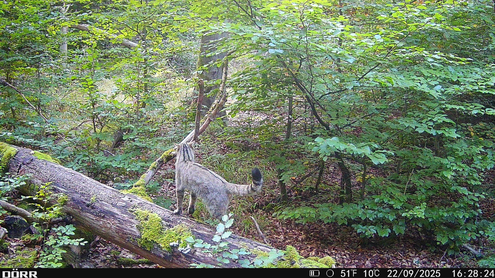
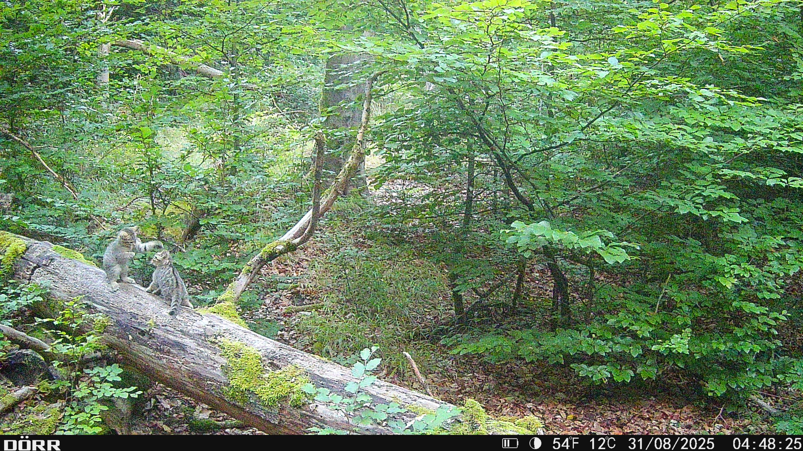
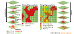
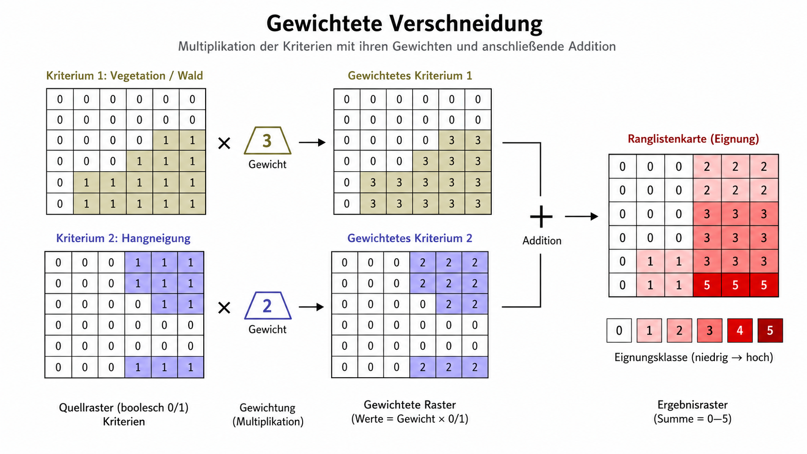

Wildkatzen im Lahntal: Ausgangsfrage
In diesem Abschnitt wird die Verschneidung unterschiedlicher Kriterien am Beispiel eines potenziellen Wildkatzenhabitats im Marburger Uniwald eingeführt. Der lokale Bezug ist dabei nicht nur hypothetisch: Die folgenden Fotofallenbilder zeigen Wildkatzenbeobachtungen aus dem Marburger Uniwald. Die Analyse fragt daher nicht abstrakt nach „irgendeinem“ Habitat, sondern danach, wie sich potenziell geeignete Lebensräume im Umfeld solcher Beobachtungen methodisch modellieren lassen.


Die Beobachtungen zeigen, dass im Marburger Uniwald nicht nur adulte Wildkatzen, sondern auch Jungtiere nachgewiesen wurden. Die anschließende Eignungsanalyse ist dennoch keine direkte Nachweiskarte und kein validiertes Habitatmodell. Sie zeigt, wie aus fachlich begründeten Annahmen zu Deckung, Siedlungsnähe, Relief und Einschränkungsflächen eine potenzielle Eignungskarte abgeleitet werden kann.
Die fachliche Ausgangsfrage lautet: Wo könnten innerhalb eines Untersuchungsraums Flächen liegen, die für Wildkatzen eher geeignet oder eher ungeeignet sind?
Das Beispiel ist bewusst vereinfacht. Es soll nicht die vollständige Autoökologie der Wildkatze modellieren, sondern die GIS-Logik einer Eignungsanalyse zeigen. Ökologisch wird angenommen, dass Wildkatzen vor allem deckungsreiche, störungsarme und waldnahe Lebensräume nutzen. Waldstruktur, Deckung und geringe Störung sind daher zentrale Hinweise auf potenziell geeignete Lebensräume (Klar u. a. 2008; Götz u. a. 2018; Bundesamt für Naturschutz 2026). Straßen, Siedlungsnähe und stark versiegelte Flächen wirken dagegen als Störungs-, Barriere- oder Gefährdungsfaktoren (Klar, Herrmann, und Kramer-Schadt 2009; Bundesamt für Naturschutz 2026).
Für das didaktische Modell werden daraus fünf räumliche Eingangsdaten abgeleitet:
- Walddichte als Hinweis auf Deckung und Waldstruktur
- Siedlungsnähe als Störungsgradient
- Höhe, aus der Hangneigung und Exposition abgeleitet werden
- Hangneigung als ergänzender Reliefindikator
- Exposition als ergänzender Relief- und Mikroklimaindikator
- versiegelte Flächen als Einschränkung
Die Walddichte steht im Modell stellvertretend für Deckung und Waldstruktur. Eine hohe Walddichte wird günstiger bewertet als offene oder stark ausgedünnte Bereiche. Fachlich bleibt das eine Vereinfachung, weil reale Wildkatzenhabitate auch von Totholz, Verstecken, Waldrändern, Säumen und Jagdmöglichkeiten abhängen.
Die Siedlungsnähe beschreibt einen Störungsgradienten. Flächen in unmittelbarer Nähe zu Gebäuden, Siedlungsrändern oder intensiv genutzten Bereichen werden geringer bewertet als siedlungsfernere Bereiche. Damit wird nicht behauptet, dass Wildkatzen Siedlungen grundsätzlich nie queren. Die Variable beschreibt nur eine abnehmende potenzielle Eignung mit zunehmender Nähe zu menschlicher Nutzung.
Hangneigung und Exposition werden aus dem Höhendatensatz abgeleitet. Sie sind in diesem Beispiel keine harten Wildkatzenpräferenzen, sondern ergänzende Reliefvariablen. Hangneigung kann indirekt mit Nutzungsintensität, Zugänglichkeit oder Vegetationsstruktur zusammenhängen. Exposition kann mikroklimatische Unterschiede anzeigen. Beide Variablen sollten deshalb schwächer gewichtet werden als Deckung oder Störung.
Die versiegelten Flächen werden nicht als normaler Eignungsfaktor behandelt, sondern als Einschränkung. Das entspricht der Logik des späteren Flowcharts: Zuerst wird aus den bewerteten und gewichteten Eingangsdaten eine potenzielle Eignung berechnet. Danach wird diese Eignung mit einer Einschränkungskarte kombiniert. Versiegelte Flächen, große Straßen oder stark bebaute Bereiche können dadurch stark abgewertet oder ausgeschlossen werden.
Dieses Beispiel zeigt die Methode der Eignungsanalyse, nicht ein vollständiges Wildkatzen-Habitatmodell. Wichtige reale Habitatfaktoren wie Gewässernähe, Waldränder, Hecken, Totholz, Kleinsäugerhabitate oder konkrete Straßenklassen werden hier nicht als eigene Eingangsdaten modelliert.
Benötigte Daten
| Modellbaustein | Datengrundlage | Verarbeitung |
|---|---|---|
| Höhe | Digitales Geländemodell | Ausgangsdatensatz für Hangneigung und Exposition |
| Hangneigung | aus DGM abgeleitet | Reklassifikation in Eignungsklassen |
| Exposition | aus DGM abgeleitet | Umwandlung in Expositionsklassen; zirkuläre Werte beachten |
| Walddichte | Landbedeckung, Vegetationsindex, Luftbild oder Waldmaske | Reklassifikation in Eignungsklassen |
| Siedlungsnähe | Gebäude- oder Siedlungsflächen aus OSM, ALKIS oder ATKIS | Distanzanalyse und Reklassifikation |
| Versiegelte Flächen | Straßen, Gebäude, versiegelte Flächen aus OSM, ALKIS, ATKIS oder Copernicus Imperviousness | Einschränkungsmaske oder Abwertungsfaktor |
Erste Modellvariante: Boolesche Verschneidung
Aus der Wildkatzenfrage lässt sich zunächst eine sehr einfache Modellvariante bilden. Dafür werden alle Eingangsdaten auf die beiden Zustände geeignet und nicht geeignet reduziert. Solche Daten werden als binäre Informationsebenen dargestellt. Geeignete Zellen erhalten den Wert 1, ungeeignete Zellen den Wert 0.
Angenommen, die Wildkatze im Marburger Uniwald würde in diesem stark vereinfachten Beispiel nur Laubwälder und nur steile Bereiche mit mehr als 20 Grad Hangneigung nutzen. Dann reichen zwei binäre Informationsebenen aus:
Wald/NichtwaldHangneigung > 20 Grad / Hangneigung <= 20 Grad
Potenzielle Habitate sind dann genau die Zellen, für die beide Bedingungen erfüllt sind. Mathematisch entspricht dies einer Multiplikation der binären Karten:
\[E = K_1 \times K_2\]
Sobald eine der beiden Karten den Wert 0 enthält, wird auch die Ergebniszelle 0. Nur dort, wo alle Kriterien den Wert 1 haben, entsteht in der Zielkarte eine geeignete Fläche.

Die Boolesche Verschneidung eignet sich vor allem für Eignungsanalysen mit randscharfen und klar ausschließenden Kriterien. Können zum Beispiel Siedlungsgebiete oder stark versiegelte Verkehrsflächen bereits zu Beginn der Analyse als Katzenlebensraum ausgeschlossen werden, ist das potenzielle Eignungsgebiet mit einer einfachen Booleschen Verschneidung schnell ermittelt.
Eine Addition binärer Karten erzeugt dagegen keine harte Ausschlusskarte, sondern eine einfache Ranglistenkarte. Bei zwei Kriterien ergibt sich dann 0 für keine erfüllte Bedingung, 1 für eine erfüllte Bedingung und 2 für beide erfüllten Bedingungen:
\[R = K_1 + K_2\]
Von der Booleschen zur gewichteten Verschneidung
Für viele Fragestellungen reicht die Einteilung der Realität in die binären Kategorien wahr oder falsch nicht aus. Eine Fläche kann näher oder weiter von einer Siedlung entfernt liegen, dichter oder lichter bewaldet sein, stärker oder schwächer geneigt sein. Solche Unterschiede gehen in einer rein Booleschen Analyse verloren.
Im Wildkatzenbeispiel ist deshalb eine abgestufte Bewertung sinnvoller. Aus Wald/Nichtwald wird Walddichte. Aus steil/nicht steil wird Hangneigung. Aus besiedelt/nicht besiedelt wird Siedlungsnähe. Diese Eingangsdaten tragen unterschiedliche Einheiten und Wertebereiche. Sie müssen deshalb vor der Verschneidung standardisiert werden.
Standardisierung bedeutet, dass alle Eingangsdaten auf eine gemeinsame Eignungsskala übertragen werden. Im Flowchart geschieht dies durch die Zuweisung von Kategorien 1, 2 und 3. Alternativ können auch Skalen wie 0 bis 1, 0 bis 100 oder 0 bis 255 verwendet werden. Entscheidend ist, dass die Skala gleichläufig ist: Hohe Werte bedeuten hohe Eignung, niedrige Werte geringe Eignung.
Nach der Standardisierung werden die Kriterien gewichtet. Die Gewichtung drückt aus, dass nicht alle Kriterien für die Fragestellung gleich wichtig sind. Im Wildkatzenbeispiel sollten Deckung und Störungsarmut fachlich stärker gewichtet werden als ergänzende Reliefvariablen. Die Summe der Gewichte sollte 1 ergeben:
\[\sum_i w_i = 1\]
Die gewichtete Eignung ergibt sich dann aus der Summe der standardisierten Kriterienwerte, jeweils multipliziert mit ihrem Gewicht:
\[E = \sum_i w_i \cdot K_i\]
Dabei bezeichnet K_i den standardisierten Wert eines Kriteriums und w_i sein Gewicht. Die resultierende Karte enthält keine Einheiten mehr, sondern einen Eignungsindex.
Ablauf der gewichteten Eignungsschätzung
x
Zuweisung Kategorien 1, 2, 3
Zuweisung Kategorien 1, 2, 3
Zuweisung Kategorien 1, 2, 3
Zuweisung Kategorien 1, 2, 3
+
Gewichtung
0 - 1
+
Gewichtung
0 - 1
+
Gewichtung
0 - 1
+
Gewichtung
0 - 1
x
Einschränkung
Potenzielle Eignung
Schritt 1: Ableiten der Hangneigung und der Exposition aus dem Höhendatensatz
Schritt 2: Erstellen von Eignungskategorien auf der Grundlage der Eingangsdatensätze
Schritt 3: Multiplikation aller kategorisierten Datensätze mit ihren Gewichten (Summe = 1)
Schritt 4: Anwendung von Einschränkungen
Schritt 5: Multiplikation von Eignungs- und Einschränkungskarte
Wildkatzen nutzen deckungsreiche, störungsarme Waldlebensräume;
Reliefdaten werden ergänzend bewertet, versiegelte Flächen wirken einschränkend.
Stark befahrene Strassen und Autobahnen werden kategorisch gemieden.
Höhe
Walddichte
Siedlungs-
näche
Versiegelte Flächen
Potenzielle Eignung
x
x
x
Hangneigung
Exposition
Das Flowchart zeigt die gesamte Logik der gewichteten Verschneidung. Zuerst werden die Eingangsdaten ausgewählt. Die Höhe liefert die abgeleiteten Reliefdaten Hangneigung und Exposition. Walddichte und Siedlungsnähe gehen direkt als weitere Kriterien ein. Danach werden alle Kriterien in gemeinsame Eignungskategorien überführt.
Die Schritte lassen sich so lesen:
- Kriterienauswahl: Zunächst werden die räumlichen Kriterien festgelegt, die für die vereinfachte Wildkatzenfrage als geeignete Prädiktoren dienen. Im Diagramm sind dies Höhe, Hangneigung, Exposition, Walddichte und Siedlungsnähe.
- Ableitung von Reliefdaten: Aus dem Höhendatensatz werden Hangneigung und Exposition abgeleitet. Sie werden nicht direkt aus der Karte gelesen, sondern aus dem DGM berechnet.
- Standardisierung: Die unterschiedlichen Eingangsdaten werden in vergleichbare Eignungskategorien überführt. Dadurch können Prozentwerte, Distanzwerte, Gradwerte und Dichtewerte gemeinsam verrechnet werden.
- Gewichtung: Jeder kategorisierte Datensatz erhält ein Gewicht zwischen 0 und 1. Die Gewichte spiegeln die relative Bedeutung der Kriterien wider. Gibt es keine fachliche Begründung für unterschiedliche Gewichte, werden die Kriterien gleich gewichtet.
- Aggregation: Die standardisierten und gewichteten Kriterien werden addiert. Dadurch entsteht eine Karte der potenziellen Eignung.
- Einschränkung: Versiegelte Flächen werden separat behandelt. Sie werden nicht einfach als ein weiteres positives oder negatives Kriterium addiert, sondern anschließend als Einschränkung auf die potenzielle Eignung angewendet.
Hohe potenzielle Eignung entsteht in diesem vereinfachten Modell dort, wo deckungsreiche Waldstrukturen, geringe Siedlungsnähe und günstig bewertete Reliefbedingungen zusammenfallen. Versiegelte Flächen wirken als Einschränkung, weil sie Lebensräume zerschneiden, Störung erzeugen oder als direkte Barriere wirken können.
Gewichtete Kriterienaddition im Raster
Die gewichtete Verschneidung lässt sich im Rastermodell besonders einfach darstellen. Jede Rasterzelle erhält für jedes Kriterium einen standardisierten Eignungswert. Dieser Wert wird mit dem Gewicht des Kriteriums multipliziert. Anschließend werden alle gewichteten Werte derselben Zelle addiert.

In dieser Darstellung werden exemplarisch zwei Eignungskriterien entsprechend ihrer relativen Bedeutung gewichtet. Die Informationsebene bewaldet wird mit dem Faktor 3 gewichtet, die Informationsebene steiles Gelände mit dem Faktor 2. Nach der Gewichtung werden die beiden Ebenen addiert. Der Eignungswert der resultierenden Informationsebene reicht von 0 für nicht geeignet bis 5 für sehr geeignet.
Für eine normierte Eignungsanalyse werden solche Faktoren anschließend häufig so umgerechnet, dass ihre Summe 1 ergibt. Aus den Faktoren 3 und 2 würden dann die normierten Gewichte 0,6 und 0,4:
\[w_1 = \frac{3}{3 + 2} = 0.6\]
\[w_2 = \frac{2}{3 + 2} = 0.4\]
Bestimmung der Gewichte
Die Verteilung der Gewichte ist bei einer Eignungsanalyse ebenso wichtig wie schwierig. Die Gewichte bestimmen, welche Kriterien das Ergebnis stark prägen und welche Kriterien nur ergänzend wirken. Im Wildkatzenbeispiel wäre es fachlich nicht sinnvoll, Exposition, Hangneigung, Walddichte und Siedlungsnähe automatisch gleich wichtig zu behandeln. Deckung und Störungsarmut sind ökologisch näher an der Habitatfrage als eine reine Hangexposition.
Der einfachste Weg besteht darin, die Kriterien in eine Rangfolge zu bringen. Das wichtigste Kriterium erhält den höchsten Rang, das unwichtigste den niedrigsten Rang. Aus diesen Rangwerten können anschließend Gewichte abgeleitet werden. Bei vier Kriterien mit Rangwerten 4, 3, 2 und 1 ergibt sich die Gewichtung durch Division jedes Rangwerts durch die Summe aller Rangwerte:
\[w_i = \frac{r_i}{\sum_i r_i}\]
Ein mögliches didaktisches Beispiel wäre:
| Kriterium | Begründung | Rangwert | Normiertes Gewicht |
|---|---|---|---|
| Walddichte | Proxy für Deckung und Waldstruktur | 4 | 0,40 |
| Siedlungsnähe | Proxy für Störung und menschliche Nutzung | 3 | 0,30 |
| Hangneigung | ergänzender Reliefindikator | 2 | 0,20 |
| Exposition | ergänzender Mikroklimaindikator | 1 | 0,10 |
Diese Zahlen sind keine gemessenen Wildkatzenpräferenzen. Sie sind eine transparente Modellannahme. Genau deshalb sollte eine Eignungsanalyse immer offenlegen, wie die Gewichte festgelegt wurden. Wenn mehrere Gewichtungen fachlich plausibel sind, sollten die Ergebnisse mit unterschiedlichen Gewichtungsschemata verglichen werden. So lässt sich prüfen, ob die Eignungskarte robust ist oder stark von einzelnen Annahmen abhängt.
Die Boolesche Verschneidung fragt: Erfüllt eine Fläche alle Bedingungen oder nicht? Die gewichtete Verschneidung fragt: Wie stark erfüllt eine Fläche mehrere unterschiedlich wichtige Bedingungen?